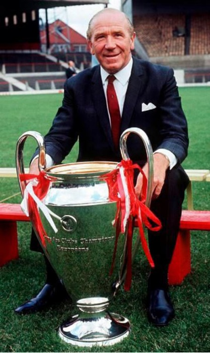
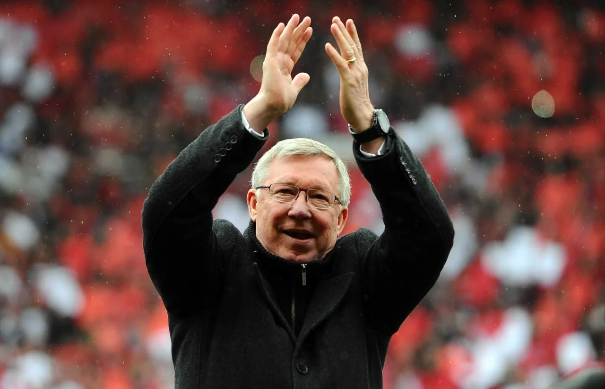

A short history
1878 – Founded as Newton Heath LYR F.C. by railway workers in Manchester.
1902 – The club is renamed Manchester United.
1958 – The Munich air disaster claims the lives of eight players, the "Busby Babes".
1968 – Under Sir Matt Busby, United become the first English club to win the European Cup.
1986–2013 – Sir Alex Ferguson's era brings 13 Premier League titles.
1999 – The historic Treble: Premier League, FA Cup and Champions League.
2008 – Champions League winners again, beating Chelsea in Moscow.

